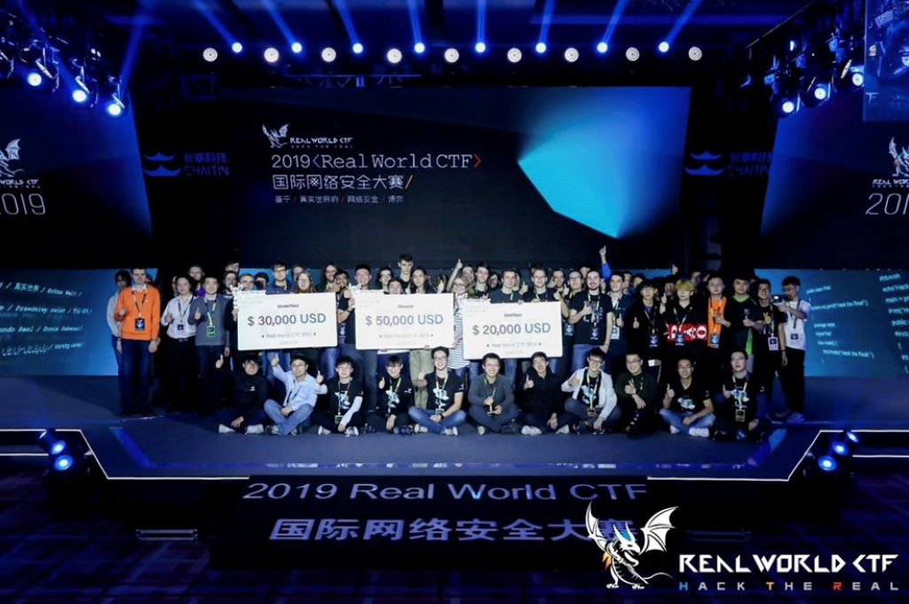
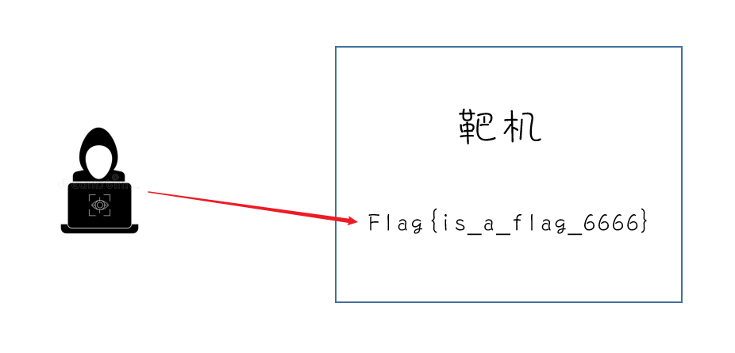
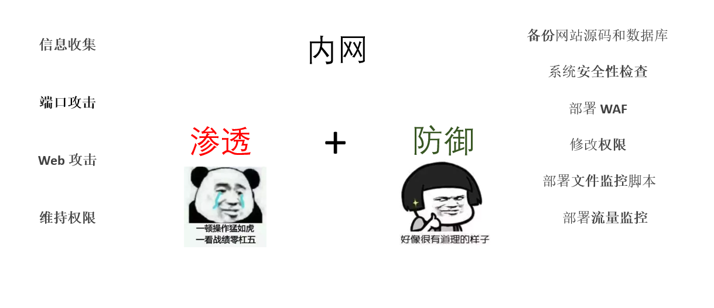
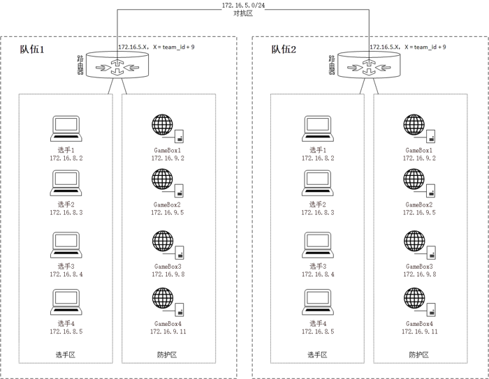
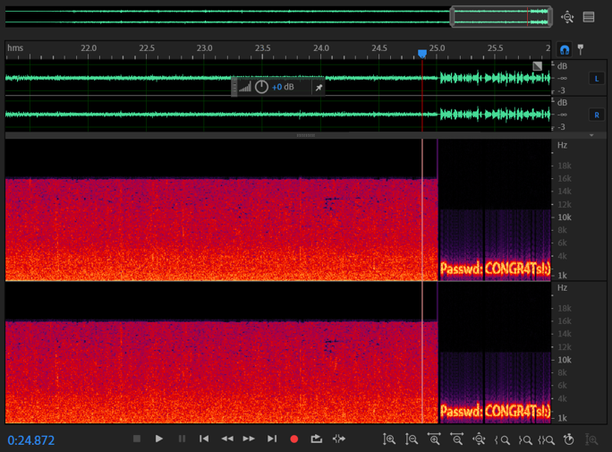
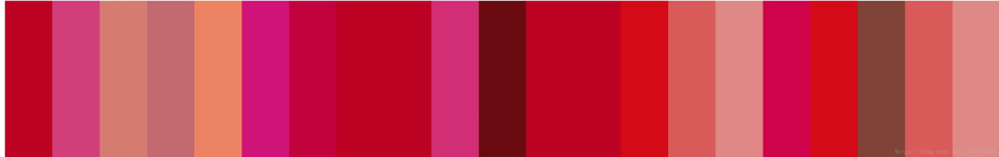
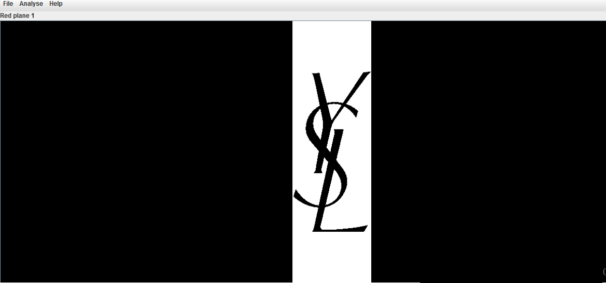
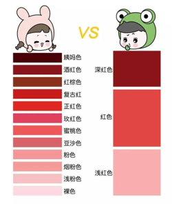
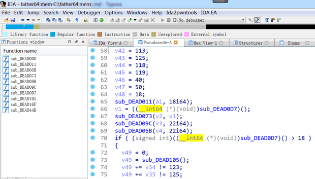
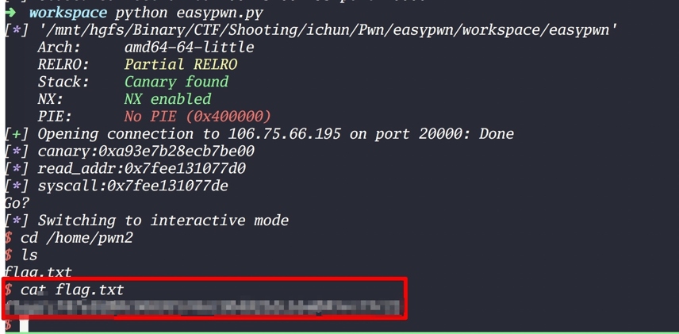

持续更新中，不断加入学到的新内容~
CTF介绍
CTF（Capture The Flag，夺旗赛）在网络安全领域中指的是网络安全技术人员之间进行技术竞技的一种比赛形式。CTF起源于1996年DEFCON全球黑客大会，以代替之前黑客们通过互相发起真实攻击进行技术比拼的方式。发展至今，已经成为全球范围网络安全圈流行的竞赛形式，2013年全球举办了超过五十场国际性CTF赛事。而DEFCON作为CTF赛制的发源地，DEFCON CTF也成为了目前全球最高技术水平和影响力的CTF竞赛，类似于CTF赛场中的“世界杯” 。
当然CTF比赛的奖金也很高。

CTF既然是夺旗赛，那么肯定有个flag在里面，比如这张图，下面有个靶机，靶机里面藏着flag，你就要使用各种方法去得到这个flag并提交拿到分数。

CTF比赛类别
比赛主要有以下类别
- 解题模式 - Jeopardy
- 攻防模式 - Attack & Defense
- 混合模式 - Mix
解题模式 - Jeopardy
** 解题模式（Jeopardy）**常见于线上选拔比赛。在解题模式 CTF 赛制中，参赛队伍可以通过互联网或者现场网络参与，参数队伍通过与在线环境交互或文件离线分析，解决网络安全技术挑战获取相应分值，类似于 ACM 编程竞赛、信息学奥林匹克赛，根据总分和时间来进行排名。
不同的是这个解题模式一般会设置 一血 、 二血 、 三血 ，也即最先完成的前三支队伍会获得额外分值，所以这不仅是对首先解出题目的队伍的分值鼓励，也是一种团队能力的间接体现。
题目大致分为以下类型
- Web 网络攻防
- RE 逆向工程
- Pwn 二进制漏洞利用
- Crypto 密码攻击
- Misc 安全杂项
攻防模式 - Attack & Defense
攻防模式常见于线下决赛。在攻防模式中，初始时刻，所有参赛队伍拥有相同的系统环境（包含若干服务，可能位于不同的机器上），常称为 gamebox，参赛队伍挖掘网络服务漏洞并攻击对手服务获取 flag 来得分，修补自身服务漏洞进行防御从而防止扣分（一般来说防御只能避免丢分，当然有的比赛在防御上可以得分）。
一般比赛的具体环境会在开赛前一天或者当天开赛前半小时由比赛主办方给出（是一份几页的小文档）。在这一段时间内，你需要根据主办方提供的文档熟悉环境并做好防御。
攻防模式主要是攻和防守，下面的图片展示了一些比赛要做的事情,在另外一篇文章总结了AWD模式比赛的一些比赛思路（还没写 懒~）


混合模式 - Mix
结合了解题模式与攻防模式的CTF赛制，比如参赛队伍通过解题可以获取一些初始分数，然后通过攻防对抗进行得分增减的零和游戏，最终以得分高低分出胜负。采用混合模式CTF赛制的典型代表如iCTF国际CTF竞赛。
题目类型
由于 CTF 的考题范围其实比较宽广，目前也没有太明确的规定界限说会考哪些内容。但是就目前的比赛题型而言的话，主要还是依据常见的 Web 网络攻防、RE 逆向工程、Pwn 二进制漏洞利用、Crypto 密码攻击 以及 Misc 安全杂项 来进行分类。
Web - 网络攻防
WEB应用在今天越来越广泛，也是CTF夺旗竞赛中的主要题型，题目涉及到常见的 SQL 注入、XSS、CSRF、文件包含、文件上传、代码审计、PHP 弱类型等。这些题目都不是简单的注入、上传题目，至少会有一层的安全过滤，需要选手想办法绕过。且Web题目是国内比较多也是大家比较喜欢的题目。因为大多数人开始安全都是从web日站开始的
信息泄露、代码审计Cookie伪造、社会工程、命令注入、XSS 盲打、端口扫描、x-forwarded-for绕过限制、orderby注入、SQL 注入、搜索型SQL注入、SSRF 漏洞、CSRF漏洞、PHP反序列化、WAF 绕过漏洞、暴力破解、目录遍历、文件包含、任意代码执行、文件上传漏洞、任意文件下载、弱口令、隐藏字段、robots.txt、j2ee框架漏洞、Strtus2框架漏洞、PHP反序列化、ZIP://伪协议漏洞、TOMCAT漏洞、权限漏洞、业务逻辑支付漏洞、旁注漏洞、JS前端校验等。
大约题目会出现以下几个大类
爆破 包括包括 md5、爆破随机数、验证码识别等
绕WAF 包括花式绕 Mysql、绕文件读取关键词检测之类拦截
注入 各种姿势注入
花式玩弄几个 PHP 特性 包括弱类型，strpos 和 ===，反序列化 + destruct、\0 截断、
iconv 截断
PHP 伪协议 zip://、phar://、php://filter/read 等
各种找源码技巧 包括 git、svn、xxx.php.swp、www.(zip|tar.gz|rar|7z)、xxx.php.bak
文件上传 包括花式文件后缀 .php345 .inc .phtml .phpt .phps、各种文件内容检测
Mysql 类型差异 包括和 PHP 弱类型类似的特性, 0x、0b、1e 之类，varchar 和 integer 相互转换
open_basedir、disable_functions 花式绕过技巧 包括 dl、mail、imagick、bash 漏洞、DirectoryIterator 及各种二进制选手插足的方法
条件竞争 包括竞争删除前生成 shell、竞争数据库无锁多扣钱
windows 特性 包括短文件名、IIS 解析漏洞、NTFS 文件系统通配符、:DATA，冒号截断
SSRF 包括花式探测端口，302 跳转、花式协议利用、gophar 直接取 shell 等
XSS 各种浏览器 auditor 绕过、富文本过滤黑白名单绕过、flash xss、CSP 绕过
XXE 各种 XML 存在地方（rss/word / 流媒体）、各种 XXE 利用方法（SSRF、文件读取）
协议 花式 IP 伪造 X-Forwarded-For/X-Client-IP/X-Real-IP/CDN-Src-IP、花式改 UA，花式藏 FLAG、花式分析数据包
Misc - 安全杂项
Misc 安全杂项 全称Miscellaneous。题目涉及流量分析、电子取证、人肉搜索、数据分析、大数据统计等等，覆盖面比较广。我们平时看到的社工类题目；给你一个流量包让你分析的题目；取证分析题目，都属于这类题目。主要考查参赛选手的各种基础综合知识，考察范围比较广。
当然杂项中也包含了隐写Steganography，隐写术是我开始接触CTF觉得比较神奇的一类，知道这个东西的时候感觉好神奇啊，黑客们真是聪明。题目的Flag会隐藏到图片、音频、视频等各类数据载体中供参赛选手获取。载体就是图片、音频、视频等，可能是修改了这些载体来隐藏flag，也可能将flag隐藏在这些载体的二进制空白位置。有时候需要你侦探精神足够的强，才能发现。此类题目主要考查参赛选手的对各种隐写工具、隐写算法的熟悉程度。实验吧“角斗场”的隐写题目在我看来是比较全的，以上说到的都有涵盖。新手盆友们可以去了解下。
涉及到 图片隐写、LSB水印算法隐藏、二维码技术、音频分析、摩斯电码、ZIP暴力破解、数据分析、网络分析、二进制取证分析、网络抓包分析、Base64解密、APK逆向分析、APK木马分析、Webshell查杀、编程、社会工程、编程、应急响应、文件头修改、文件头修复、图片分离、pngcheck、摩斯电码等
题目有以下几个类别
- 压缩包加密，伪加密、暴力破解、明文攻击、CRC32 碰撞
- 图片隐写，LSB、Stegsolve、binwalk、foremost、JPHS、文件头部属性、RGB 图片像素点还原
- 音频隐写，MP3Stego、分析频谱
- 流量包分析，追踪流、直接导出、binwalk、foremost
- 社工，包括花式查社工库、微博、QQ 签名、whois

举个栗子（不可食用）
N1CTF 2018 国际赛 的 Lipstick 多彩
题目图片 ：https://ctf.bugku.com/files/9c1e769e2799f5b79ddadbdf49ac274b/lipstick.png

拿到题目分析出来为 YSL 杨树林，一个口红的牌子

图片里面包含了一个压缩包，并不是zip伪加密，密码是YSL对应口红色号的二进制转字符串
打CTF一般男生居多，这也是一击重杀

Crypto - 密码攻击
全称Cryptography。题目考察各种加解密技术，包括古典加密技术、现代加密技术甚至出题者自创加密技术,古典密码学趣味性强，种类繁多，现代密码学安全性高，对算法理解的要求较高。实验吧“角斗场”中，这样的题目汇集的最多。这部分主要考查参赛选手密码学相关知识点。
DES、奇偶校验（汉明码）、算法、算法编程、文件格式、jother、移位密码、频率分析、维吉尼亚解密、Windows密码、Rabin加密算法、乐谱隐藏、替换密码、频率攻击、base64解密、md5破解、栅栏密码、猪圈密码、RAR 破解、四方密码、中文电码、RSA共模攻击、维吉尼亚、频率攻击等。
- 古典密码 凯撒密码 维吉尼亚密码 棋盘密码 等
- 现代密码 RSA、hash 长度扩展、异或、移位加密各种变形、32 位随机数过小、唯密文攻击
Reverse Engineering - 逆向工程
逆向工程全称reverse指对应用程序的反编译的过程,题目涉及到软件逆向、破解技术等，主要通过使用IDA进行静态分析以及动态调试工具OD,x96dbg,gdb等动态调试对程序进行一步一步的逆向工作,在CTF中一般的题型为逆向加密手段,动态调试分析代码,并且有程序带壳需要进行脱壳工作,逆向选手的前提是掌握C语言,C++语言,以及汇编语言，要求有较强的反汇编、反编译扎实功底。
需要掌握汇编，堆栈、寄存器方面的知识。有好的逻辑思维能力。主要考查参赛选手的逆向分析能力。此类题目也是线下比赛的考察重点。
EXE 程序逆向、APK 逆向、算法分析、固件逆向、注册机逆向、逆向算法、JAVA 逆向、JAVA 编程、脱壳、IDA 分析、脱壳技术等。

Pwn - 二进制漏洞利用
PWN在黑客俚语中代表着攻破，取得权限，在CTF比赛中它代表着溢出类的题目，其中常见类漏洞有栈溢出,格式化字符串,堆溢出，利用漏洞来进行对程序的攻击获取shell.以及熟练掌握汇编语言还有pwntools的使用。在CTF比赛中，线上比赛会有，但是比例不会太重，进入线下比赛，逆向和溢出则是战队实力的关键。主要考察参数选手二进制漏洞的发掘和利用，
需要对计算机操作系统底层有一定的了解。在 CTF 竞赛中，PWN 题目主要出现在 Linux 平台上。
Linux本地、Windows本地、远程溢出，二进制文件分析、溢出代码编写、IDA 分析、NC 反弹技术等。

环境准备
系统环境
- Java (推荐jdk.18)
- Python3 Python2
浏览器
Chrome
- ApiDebug - Http Test (api调试工具)
- Adblock Plus - 的免费广告拦截程序
- EditThisCookie (修改cookie工具）
- HackBar （渗透测试地址栏工具）
- Proxy SwitchyOmega （切换各种代理）
- Shodan （互联网端口扫描）
- SimpRead - Reader View （阅读格式化工具）
- Take Webpage Screenshots Entirely - FireShot （截取网页图片）
- Tampermonkey （油猴，有很多插件）
- The Great Suspender （chrome 页面冻结，节省内存资源）
- Wappalyzer （网站服务扫描）
https://chrome.google.com/webstore/category/extensions
Firefox
- 简悦 - SimpRead
- Adblock Plus - 的免费广告拦截程序
- Cookie Editor （修改cookie）
- HackBar （渗透测试地址栏工具）
- Proxy SwitchyOmega （切换各种代理）
- Shodan （互联网端口扫描）
- Tampermonkey （油猴，有很多插件）
- Wappalyzer （网站服务扫描）
- User-Agent Switcher （切换用户标识）
https://addons.mozilla.org/zh-CN/firefox/
软件
压缩软件
- Winrar http://www.winrar.com.cn/
- Bandizip for Windows http://www.bandisoft.com/
文本编辑器
- Notepad++ https://notepad-plus-plus.org/
- Sublime Text 3 http://www.sublimetext.com/
- Visual Studio Code https://code.visualstudio.com/
- IntelliJ IDEA （Community） http://www.jetbrains.com/idea/
- JetBrains PyCharm （Community）http://www.jetbrains.com/pycharm
抓包软件
- Wireshark https://www.wireshark.org/
虚拟机
- VMware Workstation Pro https://www.vmware.com/cn.html
激活密钥许可证VMware Workstation Pro 15
激活许可证
- UY758-0RXEQ-M81WP-8ZM7Z-Y3HDA
- VF750-4MX5Q-488DQ-9WZE9-ZY2D6
- UU54R-FVD91-488PP-7NNGC-ZFAX6
- YC74H-FGF92-081VZ-R5QNG-P6RY4
- YC34H-6WWDK-085MQ-JYPNX-NZRA2
本地php环境
- phpStudy http://phpstudy.php.cn/
好用的软件
- Everything 快速搜索本地文件 https://www.voidtools.com/
工具包
- windows 渗透工具集合 https://pentestbox.org/
- CTF Tools https://www.ctftools.com/down/
一些网站
https://ctf-wiki.github.io/ctf-wiki/
在线学习
学习路线
信息资讯
技术论坛
CTF 赛事
CTF OJ
- XCTF OJ
- CTF大本营
- pwnhub
- 南邮网络攻防训练平台
- HackingLab 网络信息安全攻防学习平台
- BugkuCTF
- WeChall
- Sniper OJ
- Jarvis OJ
- CTF Learn
- Hackme CTF
- Practice CTF List
CTF 工具
- 看雪工具
- 吾爱破解工具
- CTF在线工具 by CTFcode
- CTF在线工具箱 by bugku
- CTF工具资源库 by HBCTF team
- ctf-tools by zardus
- The Cyber Swiss Army Knife
CTF Writeup 集合
学习
学之前的思考：分析赛题情况
- PWN、Reserve偏重对汇编、逆向的理解
- Crypto偏重对数学、算法的深入学习
- Web编程对技巧沉淀、快速搜索能力的挑战
- Misc则更为复杂，所有与计算机安全挑战有关的都算在其中
常规做法
A方向：PWN+Reserver+Crypto随机搭配
B方向：Web+Misc组合
其实Misc所有人都可以做
恶补基础知识&信息安全专业知识
补基础的同时，可以先去看看一些大佬写的WP学习，拓展更多的思路，同时也自己不断的做题训练
推荐图书
A方向
RE for Beginners（逆向工程入门）
IDA Pro权威指南
揭秘家庭路由器0day漏洞挖掘技术
自己动手写操作系统
黑客攻防宝典：系统实战篇
B方向
Web应用安全权威指南
Web前端黑客技术揭秘
黑客秘籍——渗透测试使用指南
黑客攻防宝典WEB实战篇
代码审计：企业级Web代码安全架构
参考资料
一些大佬的博客（忘了从哪里参考的了，摘录在笔记里面